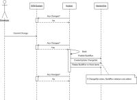
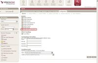
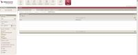
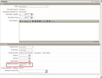

Description
The VersionOne Hudson/Jenkins integration creates a record of builds in VersionOne, so the development teams can associate stories and defects to a particular build. This visibility is useful when identifying problem builds or generating release notes.
Once the VersionOne Plugin has been installed, team members include a VersionOne identifier , such as “S-01454” or "TK-01234", in the comments of their SCM commit. Every time a build executes the publisher creates a BuildRun asset in VersionOne with details of the build. The VersionOne BuildRun is visible on the 'Relationship' tab of the Story/Defect Details page.
Using this integration you can better answer the following questions:
- Defects
- Which build the defect was reported against?
- Which build contained the fix for the defect?
- Which builds contain work for the defect?
- For Stories (Backlog Item)
- Which builds contain work for the story?
- Which build contained the completed story?
- For Build Runs
- Which defects were fixed?
- Which stories were completed?
- Which defects were introduced?
- When work for a story or defect was included?
- Which Change-sets were included?
- For a range of Build Runs
- Which stories were completed?
- Which defects were fixed?
- Which defects were introduced?
The following sequence diagram illustrates the VersionOne Hudson/Jenkins publisher behavior.

System Requirements
VersionOne:
- 8.1 or above, including Team Edition
Integration Server:
- Operating System---Windows 2000, 2003
Continuous Integration Server:
- Tested with Hudson version 1.336 - 2.1
- Tested with Jenkins version 1.336 - 1.433
Supported Source Code Management:
- Subversion - 1.17 or better
- Perforce - 1.1.5 or better
- Git - 1.3.1 or better
Downloads
The latest version of V1Publisher is available at V1: Integration Downloads
Installation
These instructions presume that Hudson or Jenkins is already installed, configured, and working properly.
- Ensure Connectivity
Verify that you can connect to your VersionOne instance from the machine hosting Hudson or Jenkins - Extract Files
Download VersionOne plugin from the link above and extract it into a folder of your choice. This can be a temporary location since we will copy some of these files during configuration. - Configure
- Verify the installation
Once configuration is complete use the following steps to verify that the build integration is working- Navigate to your Hudson/Jenkins instance
- Force a build on the project you configured
- Wait for build to complete
- Navigate to your VersionOne instance
- Login
- Select VersionOne project in 'My Projects' dropdown
- Navigate to the Reports | Reports Overview page
- Select the "Build Run Quicklist" Report
Configuration
Configure VersionOne
| If you are using Team Edition, you need to manually create the Build Project. Instructions for doing this are available on the VersionOne Community Site. |
- Log into the VersionOne application as admin
- Navigate to the Admin | Configuration | System page.
- Check the “Enable Build Integration” checkbox and click the Apply button.
 - Navigate to the Admin | Projects | Build Project page
 - Click Add to add a new Build Project
- Specify the following
- Name – this is how the Build Project will be known to VersionOne users
- Reference – this is how the Build Project is known to Hudson/Jenkins
- Click Ok to save the new Build Project
- Navigate to the Admin | Projects | Projects page
- Click Edit on the row for the project you want associated with a Build Project
- Using the “Build Projects” dropdown add the appropriate Build Project.
 - Click Ok to accept the changes
- Logout
Configure Hudson/Jenkins
These instructions presume that you are logged into Hudson/Jenkins as an administrator.
- On the Hudson/Jenkins Dashboard, Click "Manage Hudson" (or Jenkins)
- Click "Manage Plugins"
- Click Advanced
- Under "Upload Plugin" browse to your download location and select the file versionone.hpi
- Click Upload
- Restart your Hudson/Jenkins instance in order to load the new plugin
- On the Hudson Dashboard, Click "Manage Hudson" (or Jenkins)
- Click Configure System
There is a new VersionOne section at the end of this page - Provide your VersionOne connection parameters
If you connect to VersionOne through a proxy, check the "Use proxy server" checkbox and provide additional Proxy parameters

It is recommended that you do not change the "Reference Field" or "Comment RegEx" fields. The "Reference Field" is the system name of the attribute to search when matching the ID in change comments with workitems in VersionOne. The "Comment RegEx" is used to extract workitem identifiers from the change comments. - Test the connection
- Save the settings
- Choose the Job you wish to have published to VersionOne
Remember that this job name must be configured in VersionOne - Click "Configure" to configure the workspace
- In the "Post-build Actions" click the "VersionOne Notifier" checkbox
- Click "Save"


{kind=link}
{kind=link}
{kind=link}
{kind=link}
Technical Details
Adding Support for another source code management system
To add support for new VCS, the following actions are required.
- Add plugin reference to pom.xml, make sure that this dependency could be successfully resolved.
- Add a class wrapping native changeset type. SvnModification or PerforceModification are good examples on how to do it.
New class must inherit VcsModification interface and provide parameterless public constructor. - Modify VcsModificationWrapperFactory class to support new changeset type.
It is required to add line similar to classNameMappings.put("hudson.plugins.perforce.PerforceChangeLogEntry","com.versionone.hudson.PerforceModification"). String literals are mappings of native changeset log entry classes to our custom wrappers in format supported by Java Reflection, so that instances and class objects could be successfully created. Changesets will be processed as soon as user installs the corresponding plugin and restarts Hudson/Jenkins server. In fact, our plugin won’t start without its dependencies.